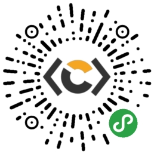

Windows下和程序员相关小工具
1 HOUR SOFTWARE – 很多的小工具集
.NET Memory Profiler – 可以找出.NET程序中的内存泄露问题，并找出可优化的内存。
.NET Reflector – 查看，导航，搜索.NET汇编中的类的继承关系。
Active Webcam – Webcam 视频监视软件。
ArsClip – 剪贴版管理程序，可以跟踪每次剪贴版中的内容，并可以通过设置热键，取出粘贴其中的内容。
ASP2ASPX – 转换ASP 程序页到ASP.NET
AutoHotKey – 自动点击键盘和鼠标。
Awave Studio – 几乎是所有的音频格式的转换程序。
Batch files – 想要不同功能的bat文件吗？这个站点集成了很多功能强大的bat文件。
BartPE – 制作一张可以启动的Windows CD/DVD
Beyond Compare – 快速容易地比较和合并本地，远程或FTP服务器上的文件和目录。
BitPim – 可以查看并操作绝大多数的 CDMA 手机
Bullzip PDF Printer – PDF文件打印机程序。
Cain & Abel – 口令恢复工具。（可以用作正常和不正常的情况）
Camtasia Studio – 屏幕录像工具。
C# Programming Tools – C# 开发工具
CCleaner – 系统优化，隐私和清理工具。
Cisco VPN Clients – Cisco VPN客户端。
Clone Detective – 这是一个集成到Visual Studio 中，允许你分析自己的C# projects 中是否有重复的代码，以便你重构你的代码。
CodeSmith – 代码生成器，可惜是收费的。
Commit Monitor – 一个任务栏中的小监视器，当 subversion 的源代码被别人更新过了，他可以通知你。
Consolas Font Pack – 终级的程序字体。（VS2005）
CurrPorts – 把所有打开的 TCP/IP 和UDP 端口都列出来。
DAEMON Tools Lite – 大名鼎鼎的超轻量级的虚拟光驱程序。
DialAFix – 可以修复很多不同的Windows 问题的小工具。
DiskAction – 查看目前的进程是怎么在存取你的硬盘的。
DoubleKiller – 查找相同的文件，并保留其中的一份。
Doxygen – 一个通过程序注释创建程序文档的工具，非常有用。
DriverMax – 导出所有驱动器的数据到一个目录或一个压缩文件中。
Debug Inspector – 在多线程中，可以同时看到各个线程的函数调用栈。并可以检测死锁。
EAC – 从CD或DVD中捕捉音视的程序。
Eraser – 彻底地删文件，删除文件后，在原来分配给文件的硬盘上写上一些随机的字符。
EVEREST – PC 诊断和benchmark的工具。
Fiddler – Web 调试代理。
FILEACL – NTFS 权限管理工具。
FileMenu Tools – Explorer 的右键菜单管理工具。
FileZilla – 鼎鼎大名的FTP/FTPS/SFTP 客户端。
FireBug – 在Firefox中调试JavaScript。
FireFTP – Firefox的FTP 客户端。
Fortres 101 – 桌面安全软件。
FSUM – 一个验证文件完整性的命令行工具。
FxCop – .NET 源码分析工具。
GetRight – 一个非常优秀的下载管理器。
Hamachi – 可以提供一个VPN 服务。设置起来非常简单，只需要10分钟，然后你就可以通过internet连入你的公司或家里了。
hMailServer – 免费的邮件服务器。
HTTP Analyzer – 实时监控，跟踪，调试，并分析 HTTP/HTTPS 的访问。
httpZip – 基于IIS 4, 5, 和6.0 的ISAPI。
IIS 6.0 Resource Kit Tools – 帮助你设置，保护和管理IIS。
IIsAdmin.NET – 创建多个IIS站点的定义。
Internet Explorer 7 Blocker – 阻止IE7 被安装。（奇怪的工具）
ImTOO MPEG Encoder – 视频格式转换。
InstallPad – 让你的程序运行地更快一些。
Instant C# – 把 VB.NET程序 转成C#程序
JavaRa – 删除好的没有用的Java版本。
Jaxe – 一个免费的 XML 编辑器，并支持 XPath 搜索。
JKDefrag – 一个很不错的磁盘碎片整理优化程序。
Junction Link Magic – 创建 junction points（比如我的文档，网上邻居这类的目录）
jZip – 创建，解压，压缩Zip, TAR, GZip 和7-Zip文件，只能解压 RAR 和ISO文件。
Launchy – 在你的开始菜单中创建文件，工程，目录和收藏夹等东西。
Leaf Networks – 创建你自己私有的网络。
LINQPad – 一个小工具可以和 SQL databases,，XML data 和object collections 交互。
MacDrive – 在Windows下挂载OS-X HFS/HFS+ 文件系统。
MagicISO – 一个强大的 CD/DVD 映像文件 创建/编辑/提取工具。
MBSA – 帮你校对并比对你系统目前的系统安全是否是微软推荐的。
Microsoft Log Parser – 可以读取基于文本的log files，XML 文件或CSV 文件，这些文件一般都是Windows操作系统中各种工具的日志文件，比如事件日志，注册表，性能监视器和活动目录。
Microsoft PowerShell 2 – Microsoft下一代的命令行shell
Microsoft RoboCopy – 强大的文件拷贝。
Microsoft SQL Server Database Publishing Wizard 1.1 – 把SQL Sever数据库变成T-SQL 脚本。
Microsoft SUA for UNIX-based Applications – 和UNIX 互通的组件。
Mono/GTK#/Moonlight – Linux下的.NET, ASP.NET 和 Silverlight
Microsoft Virtual CD-ROM Control Panel – ISO 文件虚拟光驱。
Microsoft XML Notepad 2007 – XML 文件编辑器。
MyGeneration – 代码生成器。
NAT32 IP Router – 一个外网内网IP转换程序。
NetShare Manager – 组织并控制不同网络的网络共享。
NetStumbler – 网络抓包程序，用于Wi-Fi 网络。
NetTools – 一个全面的主机监控，网络扫描，安全，管理工具。可能还更多。
NirTools – 一个Windows 工具集。
NOD32 – 号称是目前最好的防病毒软件。
NT Toolkit – 一系例小巧而实用为了网络管理而设计的工具。
NTP – Windows的网络时间服务程序。
Object Desktop – 让Windows看起来就是你想要的。
OpenVPN – 全功能的开源 SSL VPN 解决方案。支持远程访问， site-to-site VPNs, Wi-Fi 安全，和企业级的解决方案——比如负载平衡，权限策略等
Osiris Host Integrity Monitoring – 一个主机监控程序。其可以监控一台或多台主机是否发生了改变，其维护了一个非常细的日志来记录了文件系统，用户，内核模块的改变，以及更多的东西。
OSSIM – 全称是Open Source Security Information Management，一个提供了全面的工具，这些小工具在一起工作，可让你看到所有主机的网络/物理资源的使用情况。
Paint.NET – 一个免费的很简单的图片编辑器。
PowerGREP – Windows 下的grep 工具，不但支持文本文件，还支持，二进制文件，压缩文件，WORD文件，EXCEL电子表格，PDF文件等等。（关于grep，这是一个Unix下的扫描文件内容或标准输出，并找到匹配字符串的程序）
PowerLocker – 提供了一个快速简单的方式让你锁住你的PowerShell scripts
PureText – 任务栏小图标可以移除剪贴板里的文本格式。
PuTTY – 这个不用多说了，鼎鼎大名的免费的Telnet 和SSH客户端程序。
RegExBuddy – 一个容易创建正规表达式的工具。即简单，也复杂。
Regulator – 高级的正则表达式测试工具。并有语法高亮显示和web-service 集成以读取Regexlib.com的在线正则表达式。
ReSharper – 完全集成于Visual Studio，实时的错误高亮，代码提示，以及单元测试工具。一供有超过30 个高级的代码重构方案，多个代码导航和收搜工具，自动代码生成，和代码模板生成，以及其它更多的功能以配合C#, VB.NET, ASP.NET, XML, 和XAML使用。
Revo Uninstaller – 反安装，删除程序。以解决反安装中的问题。
RoboForm – 口令管理，网页表单填写。
SDC Tasks Library – 超过300 MSBuild 任务。
SOS – WinDbg 扩展，可以让WPF 和Silverlight 程序员使用。
System Information for Windows – 收集系统属性和配置的细节信息。并用一种极端的完整的方式显示出来。
SpywareBlaster – 阻止你的IE中了基于ActiveX的间谍软件，广告软件，以及流氓软件，或是其它你不想要的软件。
SmartSniff – TCP/IP 抓包程序。
SnagIt – 强大的抓屏程序。
subversion – 鼎鼎大名的代码版本控制软件。
SQL Digger – SQL存过，视图等关键字搜索工具。
SQLTac – 强大的协助你管理你的Domain Knowledge工具。
SQLTools – 免费的Oracle PL/SQL 编辑器。
SQLyog – 免费的MySQL 编辑器。
StyleCop – 分析C# 源代码，以保成代码风格的一致性。
SuperAntiSpyware – 最牛的反间谍软件扫描器。
SyncBackPro – 实时加密，版本备份和同步。
synergy2 – 让一个鼠标键盘共享给多个电脑使用。
SysInternals Suite Live – 一个超强的NETBIOS 版本的SysInternals Suite
Sysinternals Suite – 一级超强的高兴系统工具和技术信息。
SystemRescueCD – 可启动的 Linux CD
Take Command – 最好的图形Shell。
TaskPower – 查看并分析进程的运行。
TeamCity – 惊艳的持续综合包。
TestDisk – 恢复丢失的分区。
ThreatFire – 实时的行为分析和间谍软件检测软件。
TreeSize Free – 告诉你为什么宝贵的磁盘空间到哪里去了。
Trillian – 多人网络聊天工具。
TrueCrypt – 免费的开源的磁盘加密软件，可用于Windows Vista/XP, Mac OS X, 和Linux
Tunnelier – SSH 和SFTP 客户端。
TweakUI – 可以修正一些惹人烦的关于Windows UI的小软件。
UltraEdit – Text, hex, HTML, PHP, Java, Javascript, Perl, 等等，一个强大的编辑器。
UltraMon – 多显示器工具。
Undelete Plus – 恢复被删除的文件。
Unlocker – 有些时候，一些文件被一些进程占着我们无法删除，这个程序就是把这些被锁住的文件解锁。
Unstoppable Copier – 恢复被物理损坏的硬盘上的文件。允许你从一些坏磁道上把文件备份下来。
uTorrent – BitTorrent 客户端。
Vista 64-bit Codecs – Windows Vista 64-bit下的音频和视频解码器。
VisualSVN – 为了Microsoft Visual Studio开发的专业的Subversion 集成程序
VirtuaWin – 虚拟桌面。
VLC Media Player – 免费的音频和视频播放器。
vLite – 一个可以定制Windows Vista 安装的小工具。
VMware Server – 在一台机器上运行多个操作系统。
Weblog Expert – 快速和强大的网站访问log 分析和报告。
WinDbg – 低层的Windows程序调试工具。
WinHTTrack – 网页拷贝。
Windows NT 4.0 Resource Kit – 老了但可能还是有用的Windows NT 4.0 工具
Windows 2000 Resource Kit – Windows 2000 工具集
Windows 2003 Resource Kit – Windows 2003 工具集
Windows 2003 Support Tools – Windows 2003 管理工具集
WinDirStat – 磁盘使用统计和清楚工具。
WinSSHD – SSH 服务程序。
WireShark – 强大的网络协义抓包分析器。
zFTPServer Suite – FTP 服务程序，以及强大的SSL 加密安全认证。
（如有不足，请补充）

关注CoolShell微信公众账号和微信小程序
（转载本站文章请注明作者和出处 酷 壳 – CoolShell ，请勿用于任何商业用途）


 (13 人打了分，平均分： 3.15 )
(13 人打了分，平均分： 3.15 )
《Windows下和程序员相关小工具》的相关评论
推荐几个我自己用的比较多的：
7zip：http://www.7-zip.org/； 开源压缩软件，体积小，功能强大。
evernote：http://www.evernote.com/； 笔记本记录软件，可以同步到电脑（windows,mac,linux），网页版，同时有对应的firefox和chrome的插件，可以方便的记录笔记，记录网页知识，同步到服务器，普通用户60M流量每月，足够用了。
dexpot: http://dexpot.de/index.php?lang=en; 虚拟桌面，最多有20个吧，我自己用了4个，每个桌面的背景图标都不同，自己设置快捷键，实现了快速切换，不同桌面，不同心情，不同任务。
feedDemon: http://www.feeddemon.com/; 离线博客订阅器，和google reader一起使用，让我轻松订阅，浏览博客。
chrome: http://www.google.com/chrome; 谷歌浏览器，你懂的！现在有很多插件，让人爱不释手。
notepad++： http://notepad-plus-plus.org/； 代码编辑器，据说是个华裔天才写的，不过这绝对是个天才的作品，开源， 开放，支持高亮，补齐，宏。。。没有做不到，只有想不到，因为她的插件很多， 自带一个 插件管理器，安装很方便。
notepad2： http://sourceforge.net/projects/notepad2/; window记事本的强大替代品，如此强大，却如此小（600k左右）。
rocketdock: http://rocketdock.com/ 用来放置图标的工具，自动隐藏，可以设置，界面漂亮，有了她的帮助，我辅助以快捷栏实现了无图标桌面。
SumatraPDF： http://blog.kowalczyk.info/software/sumatrapdf/ ；pdf阅读器，怎一个“快”字了得！界面漂亮，功能具备，主要是快，清爽。
splayer： http://www.splayer.org/； 全能播放器，小巧，开源，方便，自动搜索字幕。射手在手，字幕我有！
I really believe this is one of the such a great deal crucial information to me. Along with i’m deli
This particular wonderful website is really intriguing and additionally helpful. We’ve picked helluva useful points from the jawhorse. I’d want to go back repeatedly. Many thanks!
To talk goodness is not good only to do it is.
给了一堆工具【145个】实际上效果不好，如果分分类是否能让读者更好快速筛选到想要的工具？
认真做事是否很难？